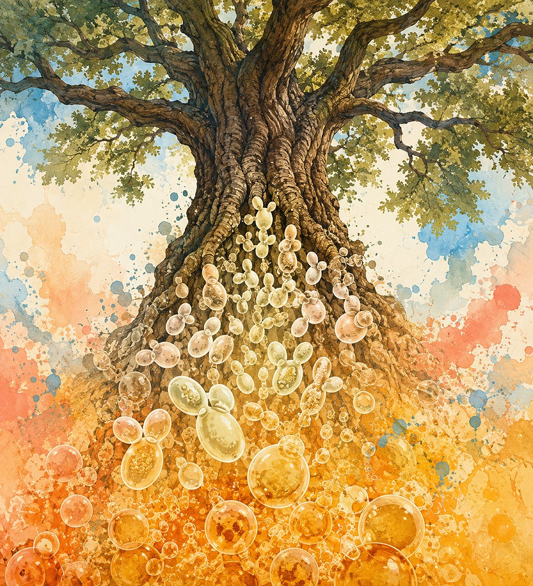

Wild yeasts are a genuinely under-explored reservoir of fermentation biochemistry, and isolating and characterizing them turns out to be a great way to teach real experimental science. We bioprospect wild yeasts from the environment, characterize their fermentation and brewing potential, and — through the Declaration of Fermentation project — bring that bioprospecting into classrooms as a place-based course-based undergraduate research experience (CURE).

We've isolated and characterized wild yeasts from sources ranging from Olympic National Park to local trees, evaluated species like Hanseniaspora uvarum, Pichia kluyveri, and Candida intermedia for brewing and probiotic potential, and developed methods such as primary souring — a bacteria-free approach to sour beer production. The Declaration of Fermentation extends this work into science education, using community-embedded wild yeast bioprospecting as a model for place-based course design.
See the full publications list →